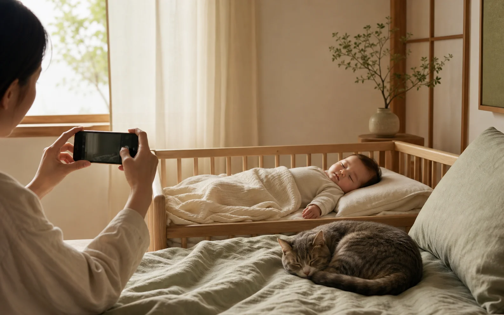

새근새근 잠든 아기
겨우 잠든 아기의 평온한 표정을, 잠을 방해하지 않도록 배려하며 남길 수 있습니다.
Nagica(나기카) 잠든 얼굴 카메라
잠든 아기와 소리에 민감한 반려동물까지. 주변을 배려한 촬영음으로 사랑스러운 순간을 사진과 영상에 조용히 남겨 보세요.

FOR QUIET MOMENTS
겨우 잠든 아기의 평온한 표정을, 잠을 방해하지 않도록 배려하며 남길 수 있습니다.
작은 소리에도 놀라는 고양이와 강아지의 자연스러운 모습도 편안하게 촬영할 수 있습니다.
작은 숨소리와 몸짓까지, 다시 보고 싶은 시간을 영상으로 기록할 수 있습니다.
DESIGNED WITH CARE
소중한 순간은 기다려 주지 않으니까. 실행하고, 구도를 잡고, 바로 촬영하는 단순함을 담았습니다.
조용한 환경을 배려해 설계했습니다. 기기, 지역, 설정에 따라 촬영음 동작은 달라질 수 있습니다.
복잡한 설정 없이, 촬영하고 싶은 순간에 사진과 영상을 간편하게 전환합니다.
촬영을 방해하는 광고나 월 구독이 없습니다. 일부 기능은 일회성 구매로 이용할 수 있습니다.
MORE THAN A CAMERA
Nagica는 잠든 모습뿐 아니라 서류와 화이트보드 기록에도 사용할 수 있습니다. 여러 페이지를 하나의 PDF로 기기 안에 저장하세요.
도서나 자료는 저작권법 등 관련 법령을 준수하고 개인적 이용이 허용되는 범위에서 사용해 주세요.
PRIVATE BY DESIGN
촬영한 사진과 영상, 스캔한 서류를 개발자가 수집하거나 외부로 전송하지 않습니다. 광고 SDK와 분석 SDK도 사용하지 않습니다.
개인정보 처리방침 보기 →도촬, 무단 촬영, 법령이나 타인의 권리를 침해하는 목적으로 사용하지 마세요. 촬영이 허용된 장소인지 확인하고 주변 사람의 개인정보와 초상권을 배려해 주세요.
소중한 순간을 사진과 영상에 조용히 남겨 보세요.